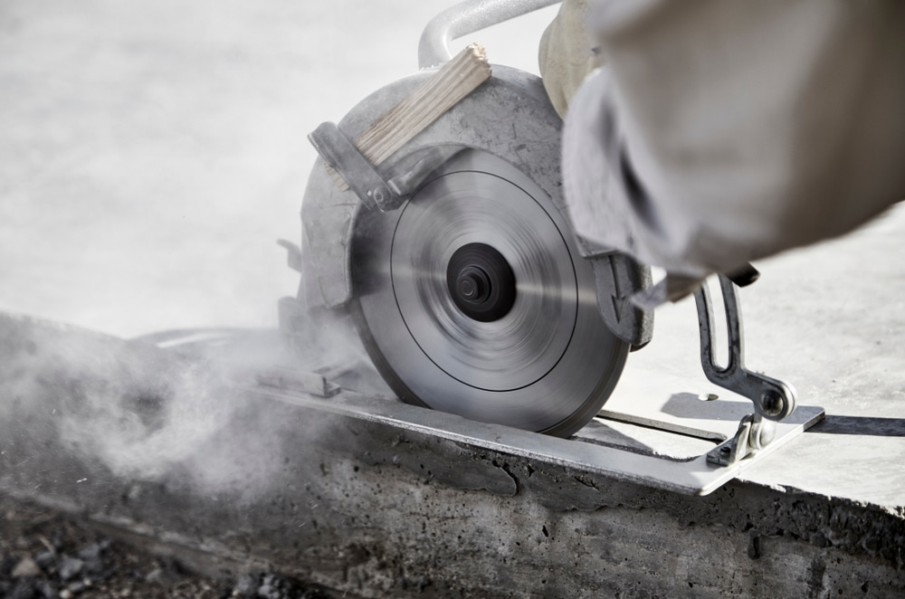

01
Bad og våtromsrehabilitering
Komplett oppbygging og flislegging av baderom og vaskerom med godkjente membransystemer, fall til sluk og tett koordinering med rørlegger og elektriker.
- Sertifiserte membransystemer
- Storformatflis og mosaikk
- Komplett våtromsdokumentasjon